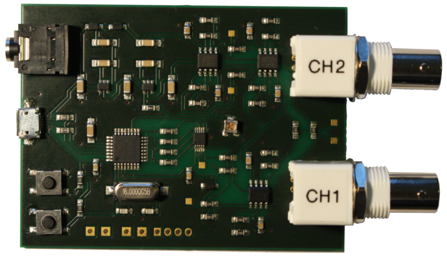
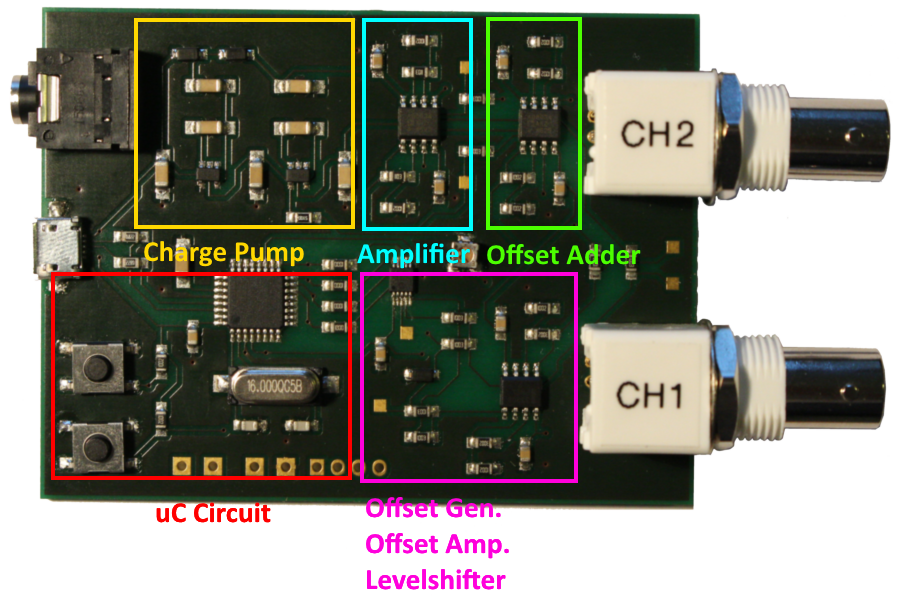

Signal Amplifier
PCB

Offset Adjustment
To finetune the offset, adjust the potentiometer until the reference voltage @Testpoint is 2,5V. Another way is to adjust the potentiometer until the voltage on the points @Offset 1 or @Offset 2 equals the offset you have set in the UI.
Programming the uC
To programm the uC is has to be brought into bootloader mode:
- Hold the reset & bootloader button
- Release the reset button
- Release the bootloader button short afterwards
As alternative, the pins for ISP programming are accessible (see next image). This method is NOT recommended.
Pin Description

Part Description
USB Details:
USB Device Class: CDC (0x2) Endpoints: CDC Data In & Data Out (0x0A) Max. Power: 100 mW Vendor ID: 0x03EB (Atmel) Product ID: 0x2044 (LUFA CDC Application)